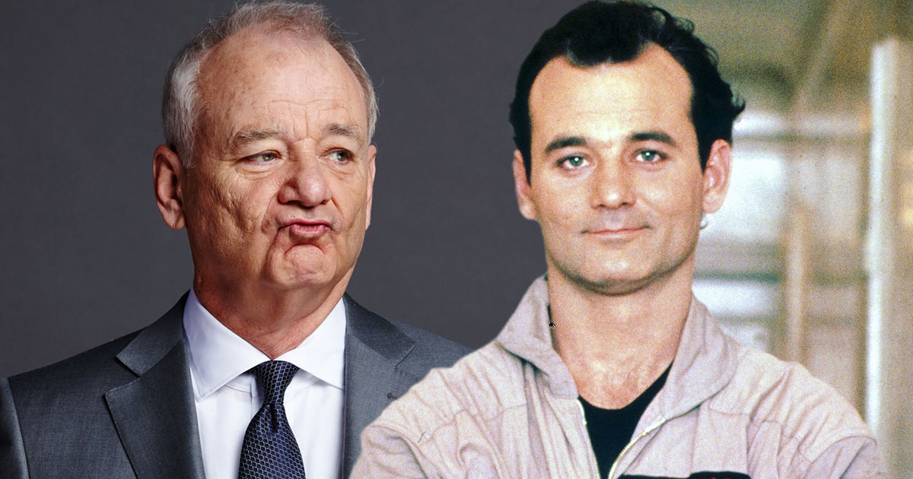
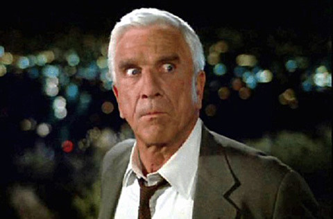
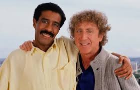
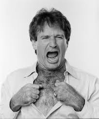
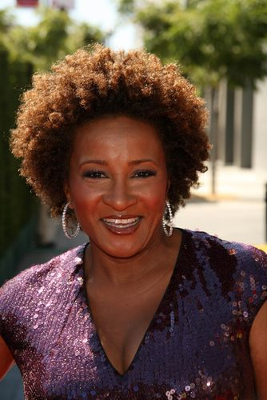
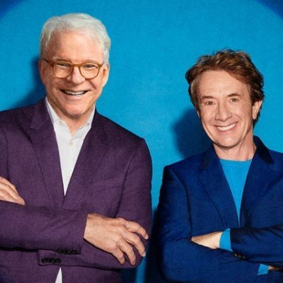
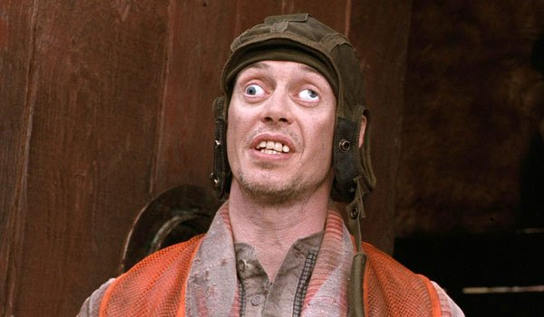

Home
Analytics
Guest Book
About
Comedy Movies
Welcome to my page about comedy movies!
Here are some of the greatest comedy actors of all time, can you name them?

Bill Murray played in several films and is the GOAT of comedy. You can see him in classics such as Stripes, Scrooged, Caddyshack or more recent films like St. Vincent or Zombieland.

Leslie Nielsen was selected for comedy, not because of his humor, but because of his lack of it. His stone faced delivery is well known in the comedy world. He is known for the Naked Gun and Airplane parody series.

Richard Pryor and Gene Wilder were an 'edgy for their time' duo who had many people splitting kidneys in their day. A couple of their greats are Stir Crazy and See No Evil, Hear No Evil.

Robin Williams is a legend and has done many great works. His earliest stuff dates back to 1977 when he was on the Richard Pryor Show. He grew famous, though, on a show called Mork & Mindy "Nanoo Nanoo".

Wanda Sykes is a hilarious comedic actor who has done a variety of of films from Bad Moms to Clerks II to teaming up with Robin Williams... She has also done many voice acting roles as well.

Steve Martin and Martin Short have co-starred in some unforgettable films over the years. Their silly slap-stick and nag after each other style has charmed us for generations. You can see them together in the Three Amigos!, several episodes of SNL, the Father of the Bride series and one of my favorites, Steve Martin and Martin Short: An Evening You Will Forget for the Rest of Your Life.

Steve Buscemi was long known to die in almost every role he played. He has a loveable charm and shows up in many comedies and dramas and he plays the unforgettable STFU Donny in the Big Lebowski.